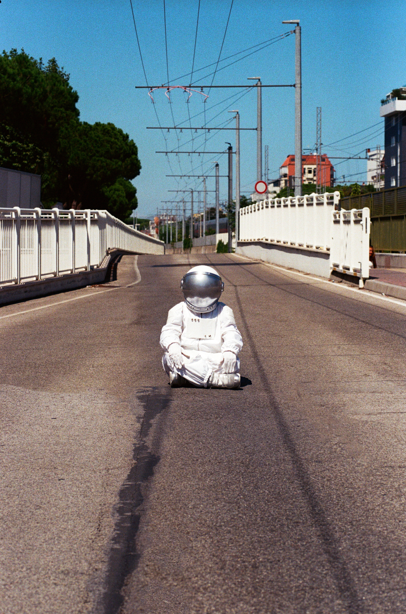

VEDO IL MONDO GIRARE

In una pagina ancora bianca, un astronauta e una macchia d'inchiostro si incontrano. Da quel momento, ogni gesto diventa un tentativo di conoscersi e di inventare un linguaggio comune.
ancora
da inventare.
Vedo il mondo girare nasce dall'incontro con l'universo visivo di Hervé Tullet e dalla possibilità di trasformare la scena in una pagina ancora da scrivere.
Un astronauta arriva in uno spazio sconosciuto. Lo esplora, lo misura, cerca una forma di contatto. Poi compare una macchia d'inchiostro: una presenza imprevedibile, mobile, impossibile da classificare.
Tra i due nasce progressivamente un linguaggio. Prima il gesto, poi il segno, il colore, il suono. Ogni elemento appare come una scoperta e modifica il modo in cui i due corpi possono stare insieme.
Lo spettacolo attraversa così il momento fragile e sorprendente in cui qualcosa che ancora non conosciamo comincia ad avere un nome, una forma e una possibilità di essere condiviso.
Un corpo estraneo
nel paesaggio
quotidiano.
Prima di entrare in scena, l'astronauta attraversa la città. Un'esplorazione fotografica nei luoghi di Riccione trasforma il quotidiano in un territorio sconosciuto.